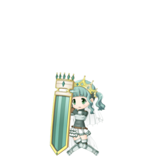

A Magical Girl who is always thinking negative thoughts. Ostracized by her family and by the people around her, she never gained any real confidence in herself. But she is gentle to others, which leads her to submit to the will of those who can be confident in their own abilities, and she is always content to serve quietly and obediently at their side. "What… was I born for? I need to change, don't I?"
The Doppel of invisibility. Its form is an inquisition chair. The master of this emotion is pained at the sight of its materialized form, but feels some sense of fulfillment as well. This Doppel’s main body isn’t the chair, but rather an invisible form that sits above the chair in a continual state of torment. The invisible Doppel uses the blood flowing from itself to attack its enemies. However, this Doppel also proves rather difficult to control. Apart from the invisible Doppel that’s normally created from its master’s left ear, a visible one may sometimes appear from her right ear instead. In these cases, the Doppel will make no distinction between enemy and ally, wildly swinging its pendulum guillotine in a violent, shrieking rampage.
| STATS | HP | ATK | DEF |
|---|---|---|---|
| Initial | 12514 | 3156 | 4375 |
| Max at ★2 | 12514 | 3156 | 4375 |
| Max at ★3 | 15847 | 3998 | 5551 |
| Max at ★4 | 20843 | 5261 | 7310 |
| Max at ★5 (Not Implemented) | 25825 | 6520 | 9080 |
★2: Damage Cut [VII]
★3: Damage Cut [X]
★4: Damage Cut [XV]
★5: Damage Cut [XV] & Attack UP [VI] & Defense UP to Iroha (Not Implemented)
★2: Damage All Enemies [I] & Defense UP (All / 3 T)
★3: Damage All Enemies [III] & Defense UP (All / 3 T)
★4: Damage All Enemies [V] & Defense UP (All / 3 T) & Damage Cut (All / 3 T)
★5: Damage All Enemies [VI] & Defense UP (All / 3 T) & Damage Cut (All / 3 T))
Random Damage Effect on All Enemies & 1 of 2 Pattern effects (Random)
Pattern 1: Defense UP (All / 3T) & Damage Cut (All / 3 T) & HP recovery (All)
Pattern 2: Burn & Darkness & Chance of Bind (All Enemies)